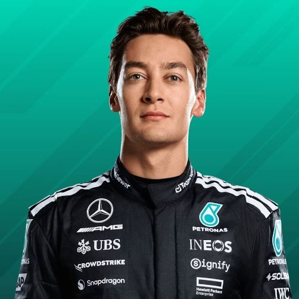
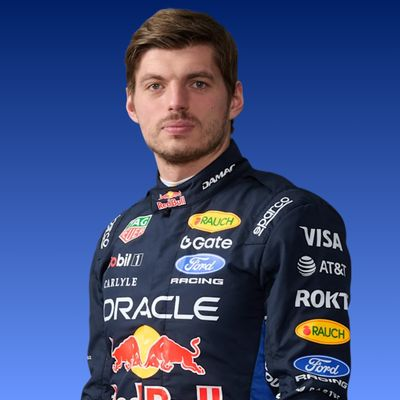
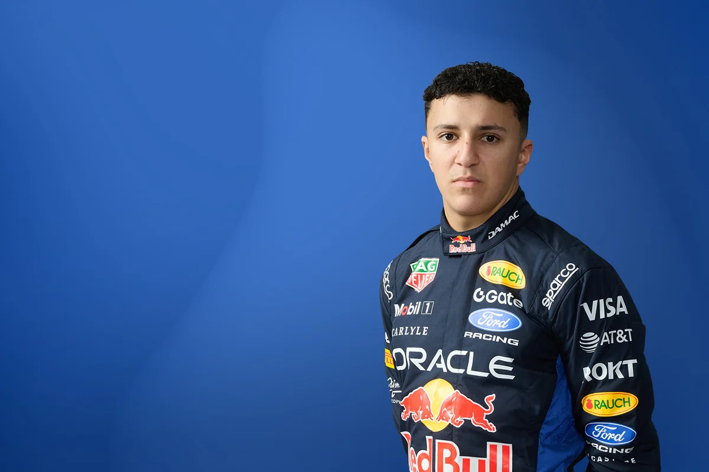
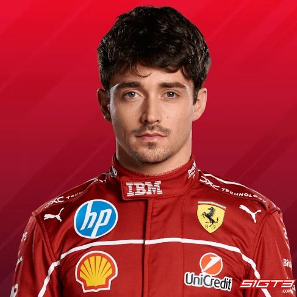
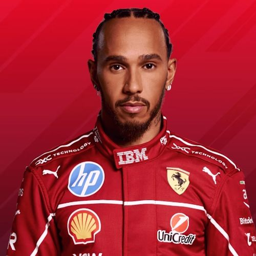
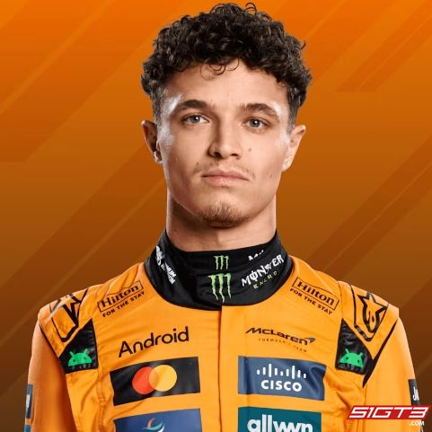
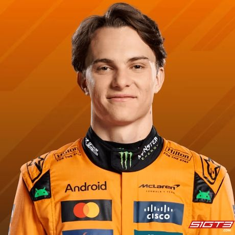
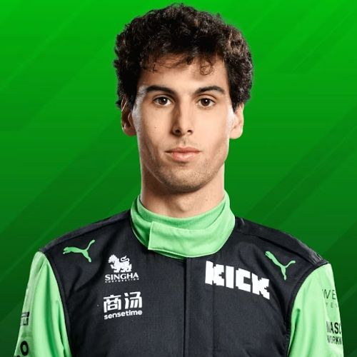
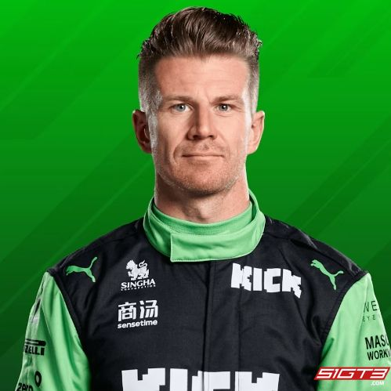
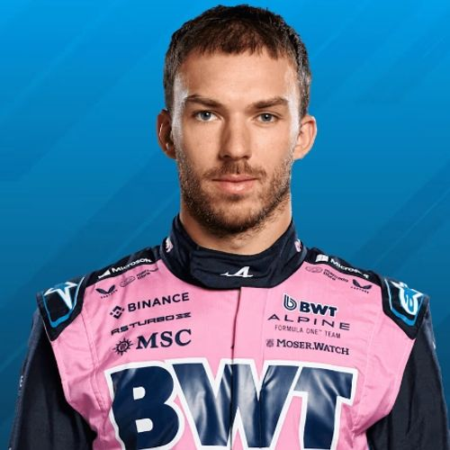

Pilotos em destaque

Andrea Kimi Antonelli
O jovem prodígio italiano da Mercedes, escolhido para assumir a vaga titular e apontado como o futuro da equipe.

George Russell
O piloto principal da Mercedes, conhecido por sua extrema precisão em voltas rápidas e liderança em pista.

Max Verstappen
O multicampeão holandês da Red Bull Racing, famoso por sua agressividade e controle impecável do carro.

Isack Hadjar
O promissor piloto francês promovido da academia para correr na equipe principal ao lado de Verstappen.

Charles Leclerc
O piloto de Mônaco, especialista em conquistas de pole position e grande destaque da escuderia Ferrari.

Lewis Hamilton
O lorde inglês e heptacampeão mundial, trazendo toda a sua experiência histórica para a equipe Ferrari.

Lando Norris
O talentoso piloto britânico da McLaren, reconhecido por sua incrível consistência e ritmo de corrida.

Oscar Piastri
O jovem australiano da McLaren que impressiona o automobilismo com sua calma e decisões precisas.

Gabriel Bortoleto
A grande promessa brasileira que estreou no grid da categoria máxima liderando o projeto da Audi.

Nico Hülkenberg
O veterano piloto alemão com vasta bagagem, responsável por estruturar o carro da Audi.

Pierre Gasly
O veloz piloto francês com vitórias no currículo que lidera o desenvolvimento do carro da Alpine.

Franco Colapinto
O jovem talento argentino que garantiu sua vaga titular na Alpine demonstrando ritmo agressivo.